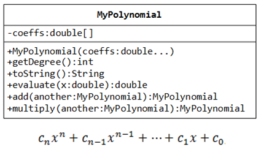

Polinômios: implemente a classe abaixo, que representa um polinômio com as operações de soma e produto. Se a sua linguagem de programação permitir, utilize sobrecarga de operadores para implementar as operações. Um polinômio possui a forma representada na equação abaixo da classe, sendo que cn, cn-1, ..., c0 são seus coeficientes.
